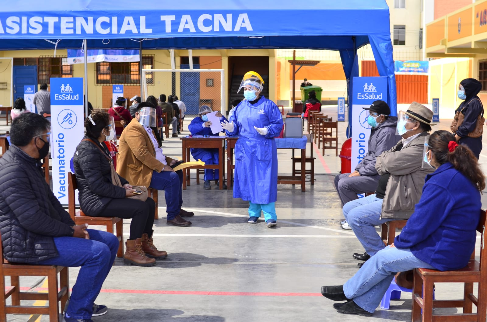

Por: Alexis Revollé / Unidad LR Data
Una alentadora sensación de sorpresa invadió a Manuel Osorio, de 39 años, al enterarse de que su vacunación contra la COVID-19 estaba programada para el 14 de julio. En febrero, el mes en que llegaron las primeras vacunas al Perú, había imaginado ese momento como un anhelo remoto. Semanas más tarde perdió a un familiar a causa del virus, y su desesperanza aumentó. Hasta que ocurrió lo impensado para él: Tacna, su región, avanzaba como ningún otro departamento en materia de inmunización.
“Siendo franco, no esperaba vacunarme este año. Acá en las regiones del sur la pandemia se llevó a mucha gente. Yo mismo he perdido familia por el virus. No estábamos preparados. El año pasado venían autoridades a crear hospitales de emergencia porque las personas no tenían dónde atenderse cuando se contagiaban. Y ahora dicen que somos la región que vacuna más rápido. Parece mentira”, declara.
El miércoles 14 de julio, Osorio llegó al vacuna car del Parque Perú —ubicado a 10 minutos del Paseo Cívico de Tacna— acompañado de su esposa para recibir su primera dosis. Recuerda que ese día salió temprano, antes de las 7 de la mañana, con un cosquilleo nervioso recorriéndole el cuerpo y una incredulidad que no terminaba de disipar.
“Esa semana había escuchado que en Lima recién se estaban vacunando las personas de 60 o 50 años, y yo que tengo menos de 40 ya estaba en el carro yendo a vacunarme. Recién cuando estuve ahí, con la jeringa en el brazo, pensé: es real, me están poniendo la vacuna. He perdido la cuenta de cuántas veces hablamos con mi familia sobre la bendita vacuna, desde el año pasado. Nunca imaginamos que en Tacna iban a avanzar así con esto”, sostiene.

Los espacios de colegios emblemáticos han sido claves en el despliegue de inmunización en Tacna. (Foto: Diresa Tacna)
En efecto, desde fines de junio, Tacna se ha consolidado como una de las regiones con los índices más altos de inmunización contra la COVID-19. “¿Por qué Tacna? No lo sé. Lo que sí te puedo decir es que todas las personas que conozco, familia y amigos, quieren vacunarse, quieren recibir la vacuna y están convencidos”, relata Osorio.
Despegue desde el sur
Al cierre de este informe, la Dirección Regional de Salud (Diresa) de Tacna dio inicio a la vacunación para jóvenes de 22 años a más en todo su territorio. Se trata, sin duda, de un caso excepcional respecto al resto del país. Si bien la llegada y distribución de vacunas contra la COVID-19 se intensificó debido al arribo de lotes con millones de dosis en junio, solo en Tacna y Callao se ha logrado una aplicación del fármaco que abarca casi al 30% de su población.
Las consecuencias de ello se han reflejado en una pronunciada disminución del número de fallecimientos en esta región del sur. En las últimas semanas, las autoridades tacneñas han comunicado con entusiasmo que pasan 4 o 5 días consecutivos sin registrar muertes por COVID-19. El último anuncio de esa índole se dio el domingo 8 de agosto.
Durante los momentos más mortales de la pandemia, en Tacna 20 personas perdían la vida cada día producto del virus, de acuerdo a la plataforma de Datos Abiertos del Ministerio de Salud (Minsa). El registro histórico de muertes muestra picos en dos períodos críticos: agosto de 2020 y febrero de 2021. Un panorama que hizo eco en todo el país y no fue muy distinto en dicha región.
“Nosotros nos dimos cuenta de la gravedad del virus cuando ya lo teníamos encima. La primera ola fue devastadora para esta parte del Perú. El virus encontró precariedad, pobreza. Nuestros pacientes se morían y nos invadía la impotencia. En agosto del año pasado identificamos cerca de 90 puntos de riesgo de contagio en Tacna. Las cuarentenas focalizadas nos tuvieron en inmovilización total porque había un riesgo epidemiológico alto”, recuerda Oscar Galdós, Director Regional de Salud de Tacna.
Los números confirman el golpe. Entre el 1 y el 8 de agosto del 2020, 106 personas fallecieron por COVID-19 en Tacna. Cifra considerable en una región con poco más de 350.000 habitantes. Un año después la situación es radicalmente diferente. Entre el 27 de julio y el 3 de agosto de este año, en Tacna solo se contaron 6 muertes a causa del coronavirus.
Julio fue el mes del despegue. En 31 días, se aplicaron 103.389 dosis en la región Tacna. Un promedio de 3.440 vacunas cada 24 horas. Los factores que hicieron esto posible dan cuenta de una circunstancia específica de la zona que, según explica el titular de la Diresa Tacna, sirvió para implementar una estrategia intensiva de inmunización.
“Yo explico que hayamos podido avanzar bien por varios puntos. Uno de los principales es que Tacna es una región pequeña. La población está concentrada en la ciudad, casi el 90% es urbana. Tenemos poca población rural. También se ha concientizado a la gente a través de información sobre la importancia de la vacuna. Y ahí nos han ayudado mucho las reuniones que tenemos semanalmente con el Corapec, que es la Comisión Regional de prevención contra el coronavirus. Esto ya viene desde marzo del año pasado, y nos reunimos todos los lunes. En esas reuniones reportamos los avances y las problemáticas que se presenten en la semana y cómo darles una solución”, detalla Galdós.
El día con mayor número de dosis aplicadas en la región fue el 31 de julio. Un total de 6.655 personas fueron vacunadas durante esa jornada, a la vez que se cerraba un mes en el que todo el Perú dirigió su mirada hacia Tacna. Desde la capital y otros departamentos, el despegue tacneño empezó a generar interés.
“Diría que hemos desarrollado una vacunación de forma agresiva. En eso ha sido importante también la conjugación que hemos tenido con otras instituciones, como EsSalud. Los resultados los vemos ahora. Desde hace 20 días estamos con uno o dos fallecidos por día. Y este último fin de semana hubo cuatro días consecutivos sin muertes por COVID-19, después de muchos meses. Eso no lo veíamos desde diciembre. Y ahorita en UCI solo estamos usando 15 camas”, agrega el Director Regional de Salud de Tacna.
Las estadísticas dan cuenta de un escenario en óptima evolución. Si en febrero de este año —el pico más alto de la crisis sanitaria— se registraba un promedio de 220 contagios diarios, hoy en Tacna se confirman 40 casos positivos de COVID-19 cada día.
Por otro lado, los índices de hospitalización muestran un comportamiento similar. Hace seis meses, se usaban más de 270 “camas COVID” debido al incremento de casos en la segunda ola. Durante esta semana, sin embargo, los hospitalizados por la enfermedad no han pasado de 42.
“Lo que sabemos es que, cada lunes, hay reuniones de la Diresa Tacna con representantes de otras instituciones, como EsSalud, la sanidad de la PNP, los bomberos, las fuerzas armadas y autoridades municipales. Una vez que han llegado los lotes a la región, automáticamente se juntan para desarrollar estrategias semanales. Acá en Tacna es así, cada semana hay un nuevo plan, diferente al de la anterior y que pretende llegar a cada vez más personas”, explica Rubén López, especialista en salud pública.
El avance no solo ha sido veloz respecto al resto de regiones, sino también encaminado a pasos seguros. La cobertura de cada grupo etario que se ha inmunizado hasta el momento es considerable.
“Otra cosa que hemos visto es que solo se ha avanzado en base a la cobertura del grupo etario anterior. Para pasar de un grupo a otro por cada 10 años, es decir, por ejemplo, cuando han terminado de vacunar a personas de 60 y empiezan con las de 59, se ha hecho con la condición de alcanzar una cobertura de al menos 70% en los de 60 a más. La cosa ha sido así: avanzamos con los de 59 y vamos bajando, pero siempre y cuando los que tienen entre 60 y 69 ya estén vacunados en un 70%”, analiza López.
Aceptación importante
Pese a todo, ninguna planificación es suficiente por sí misma. Sin una población dispuesta a vacunarse todo proyecto de esta naturaleza está destinado al fracaso. En Tacna, el indicador más certero respecto a dicha aceptación es la propia aplicación del fármaco. De la población objetiva a vacunar, es decir, 258.000 personas, 109.872 ya han recibido las dos dosis.
“Hasta el momento, hemos logrado vacunar a más del 40% de la población objetiva. Es un avance importante, pero nos preocupa que en algún momento disminuyan los lotes o no lleguen”, advierte Galdós.
Para Gladys Manrique, vecina de la ciudad de Tacna de 69 años, la percepción sobre la vacuna contra la COVID-19 ha sido favorable entre sus conocidos. Ella recibió su primera dosis el 13 de mayo, no sin algo de temor. Cuenta que, pese a las desconfianzas de un principio, casi toda su familia ya se ha inmunizado y se encuentran bien.
En julio se aplicaron se aplicaron 103.389 dosis en la región. Un promedio de 3.440 vacunas cada 24 horas. (Foto: Diresa Tacna)
“No te voy a mentir. Cuando me pusieron la vacuna estaba un poquito nerviosa. Mis hijos me decían que no iba a pasar nada malo y mira: así fue. Mi familia y otras personas cercanas han querido vacunarse desde que empezaron a llegar las vacunas. Aquí [en Tacna] la gente sí está yendo bastante a vacunarse”, relata.
Los testimonios refieren que a la planificación se ha sumado un factor clave: una comunicación efectiva. El miedo natural a un medicamento nuevo no se ha combatido con más miedo o con una campaña amenazante, sino con información útil para la ciudadanía. Así lo narra Manrique.
“Cuando llegué al Colegio Cristo Rey, donde me vacunaron, unas doctoras me explicaron cada cosa que iban a hacer, cómo me podía sentir, los cuidados que debía tener y más cosas que ya no me acuerdo mucho. Me hablaron bastante. Eso me hizo agarrar confianza. Salí tranquila después del pinchazo y mis hijos me felicitaron”, recuerda.
Lo cierto es que la comunicación ha sido sólida aunque no siempre efectiva. Quizá ello explique que una población minoritaria en Tacna aún no se haya vacunado. Y también en ello podría radicar el origen de los casos graves de coronavirus que existen a día de hoy. Son 15 pacientes en UCI, de los cuales ninguno ha recibido dosis alguna del fármaco.
“Diría que la aceptación ha sido constante. No ha sido ni muy mala ni muy buena desde el inicio. Se ha ido ganando eso en la población. Les explicamos todas las bondades y los beneficios que tiene vacunarse”, recalca Galdós.
A inicios de agosto, además, el Gobierno Regional de Tacna lanzó una campaña para estimular a aquellos ciudadanos que tuvieran puestas las dos dosis de la vacuna. El proyecto lleva por nombre “Aquí tus dos dosis se premian” y, poco a poco, va sumando aliados, como centros comerciales, en la labor de alentar la inmunización entre la población.
“Este tipo de campañas es bien importante porque, si bien la salud es un derecho fundamental, hay muchas personas que pueden entender la vacunación contra la COVID-19 como si las estuvieran obligando. Y al ofrecerles un premio o una recompensa lo que estás haciendo es darles un mensaje de alegría. No es: tienes que ir a vacunarte, a la mala. Más bien es: te felicito por ejercer tu derecho a la salud. Eso es positivo”, reflexiona López.
Preocupación
A pesar de los logros obtenidos en Tacna, el último jueves las autoridades sanitarias reportaron una alarmante escasez de vacunas a puertas de la segunda semana de agosto. Un obstáculo que podría frenar el desarrollo sostenido que se consiguió en julio.
“Solo nos quedan 1.000 dosis. Esta semana nos llegó un lote de 36.000 que ya aplicamos. Nos preocupa porque tenemos aún población joven, mayores de 22 años, que falta vacunar. Esperamos que la próxima semana llegue un nuevo lote para cubrir las jornadas que hemos planeado. Pero, bueno, al menos nuestro personal va a tener un respiro y va a poder descansar”, precisa Galdós.